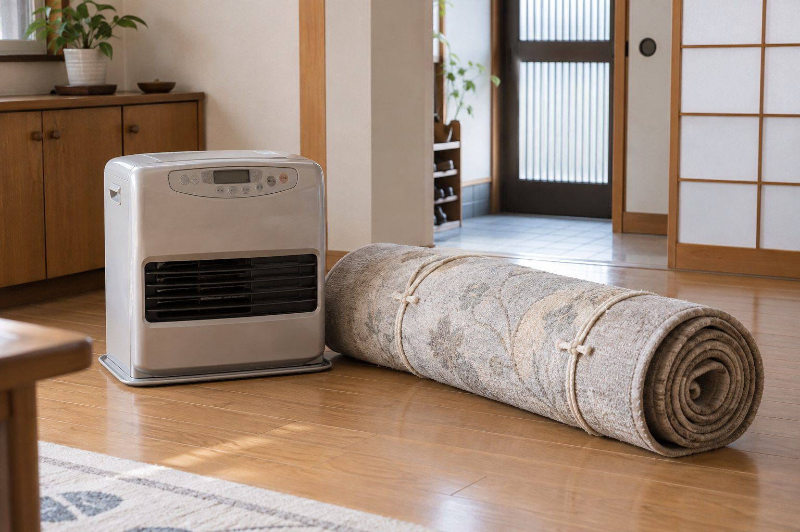

2026-09-27｜片づけ・住まい
「もう使わないわ。
でも、どうやって捨てるの？」
粗大ごみのネット申込み、引取日の決定、料金の支払い。分かりにくい手続きを、隣で一緒に進めます。
2026-09-27｜片づけ・住まい
粗大ごみのネット申込み、引取日の決定、料金の支払い。分かりにくい手続きを、隣で一緒に進めます。

「この石油ファンヒーターは、もう使わないな」
「絨毯も重いし、そろそろ片づけたい」
そう思っていても、粗大ごみは普段のごみと同じようには出せません。
ネットや電話で引き取りを申し込み、日にちを決め、料金の支払いをする。慣れている人には簡単に見えても、「どこを押せばいいの？」「料金はどうやって払うの？」「引き取りはいつ来るの？」と、ひとつ分からないことがあるだけで、手が止まってしまいます。
できないのではありません。手順が分かりにくく、ひとりで進めるのが心細いのです。
そんなときは、私にお声がけください。処分したい物を一緒に確認し、引き取りを頼む先や申込み方法を調べます。
ネットの申込み画面や電話で伝える内容を一緒に確認しながら、引取日を決め、料金と支払い方法を確認して、払い込みまでひとつずつ進めます。
「分からないところだけ聞きたい」「最初から最後まで一緒にやってほしい」など、その方に合わせてお手伝いします。パスワードや暗証番号などはお預かりせず、ご本人に確認していただきながら進めるので安心です。
申込みが終わったら、石油ファンヒーターの灯油をどのように扱うか、絨毯をどのようにまとめるかなど、申込先のルールを確認します。当日に出しやすい状態へ整える準備もお手伝いします。
「こんなことで頼んでもいいのかな」と遠慮はいりません。石油ファンヒーターひとつ、絨毯ひとつからで大丈夫です。
長く使ってきた物を手放すのは、少し寂しいこともあります。無理に急がず、「これは残したい」「これはもう使わない」というお気持ちを伺いながら、その方のペースで進めます。
※収集・処分は、自治体または必要な許可を持つ事業者が行います。品目や大きさによって申込み方法・費用・出し方が異なるため、事前に確認します。お手伝いの内容と料金も、作業前にご案内します。
「片づけたいけれど、手続きが分からない」。そんなときは、ひとりで悩まずお声がけください。
みたか暮らし相談室へ相談する